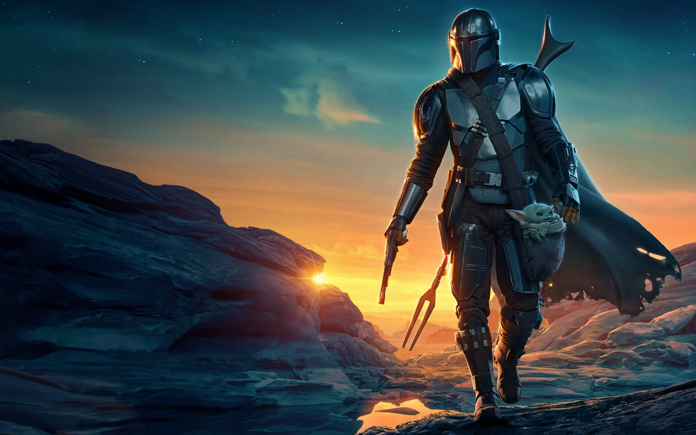
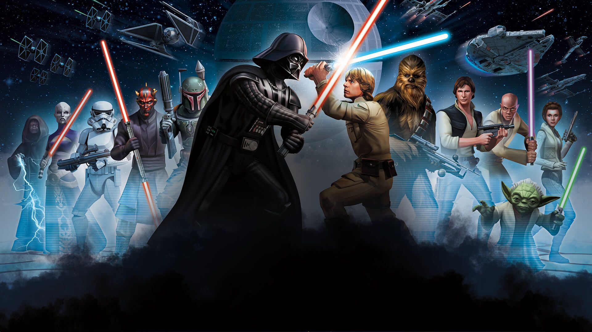
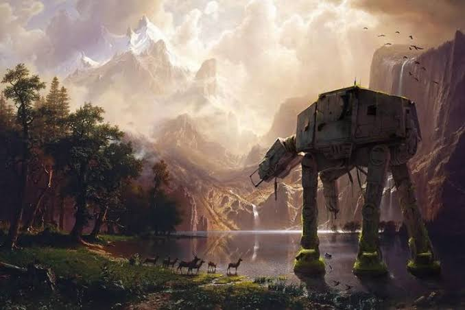
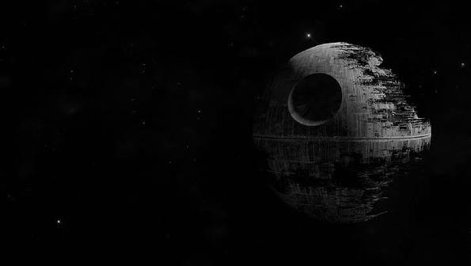
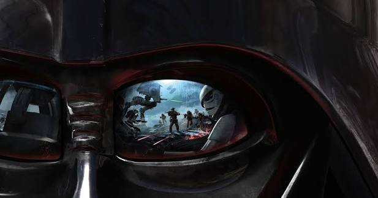
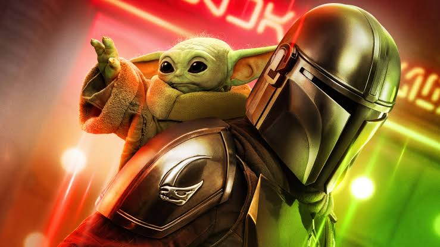

El equilibrio de la Fuerza —entre tecnología, desigualdad y cultura— se decide aquí. Esta es la conclusión que une las tres unidades del proyecto integrador en un solo desenlace.






A lo largo de este proyecto integrador recorrimos tres frentes que, aunque parecen distintos, están profundamente conectados: el avance imparable de las nuevas tecnologías y ciencias, la persistencia —y en muchos casos profundización— de la desigualdad económica y social, y la reconfiguración constante de la cultura ante un mundo cada vez más interconectado.
Ninguna de estas fuerzas actúa de manera aislada. La tecnología puede reducir brechas o ampliarlas; la desigualdad social condiciona quién accede a la innovación y quién queda fuera de ella; y la cultura es, al mismo tiempo, el escenario donde se libran estas tensiones y la herramienta con la que las sociedades intentan resolverlas.
Comprender el siglo XXI —y formarnos como docentes capaces de explicarlo— exige mirar estos tres frentes en conjunto, sin perder de vista que, como en cualquier historia de equilibrio, el resultado final depende de las decisiones que tomemos hoy.